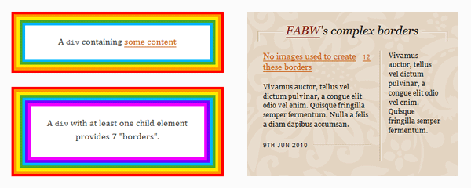
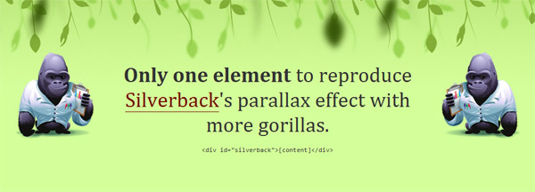

CSS
Index
| Opdracht 1 |
| Opdrachten 2 & 3 |
| Opdracht 4 |
| Opdracht 5 |
| Opdracht 6 |
| Opdracht 7 |
Inleiding
In CSS worden stijlen normaal gedefinieerd ten behoeve van een element. Soms is het echter wenselijk effecten te bereiken, die niet mogelijk zijn als je alleen beschikt over element- of attribuut-selectors. Bijvoorbeeld het in een bepaalde opmaak weergeven van de eerste letter of de eerste regel van de inhoud van een element. Om dat soort effecten mogelijk te maken, zijn pseudo-elementen geïntroduceerd. Een pseudo-element kun je zien als een denkbeeldig element, dat weliswaar niet in het document voorkomt, maar waarvoor je wel een stijl kunt definiëren. Het is supergaaf wat je kunt doen met pseudo-elementen. Ze ontgrendelen een heleboel interessante ontwerpmogelijkheden zonder de semantiek van de opmaak negatief te beïnvloeden. De meest gebruikte pseudo-elementen zijn ‘:: before’ en ‘:: after’. In het plaatje hieronder kun je zien hoe een pseudo-element werkt.

Omdat je pseudo elementen absoluut kunt positioneren, relatief t.o.v. de ‘parent’ element, kun je ze zien als twee extra lagen waar je mee kunt spelen voor elk element. Er zijn tal van mogelijkheden met pseudo-elementen, bijvoorbeeld meervoudige borders maken of meervoudige achtergronden. Op de website van Nicolas Gallagher kun je zien wat er nog meer mogelijk is met pseudo-elementen. Hieronder nog enkele voorbeelden van de mogelijkheden;
Meervoudige borders

Meervoudige achtergronden

Meervoudige vormen
In de officiële documentatie kun je meer informatie terugvinden over pseudo elementen. Zie de volgende links: Pseudo elements en Pseudo classes.